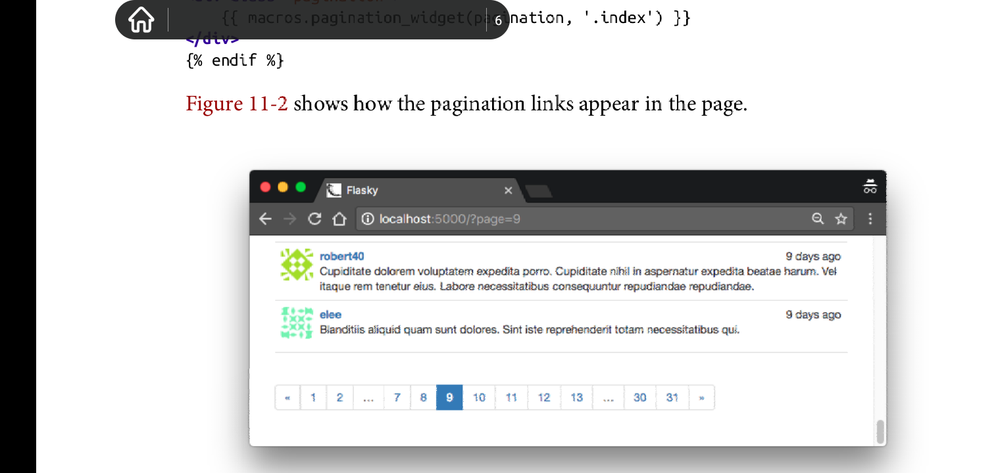

Chapter 11: Blog Posts
Overview
本章专注于实现本app的主要功能--允许用户查看和编写博客日志。本章你将学到新技术: 重用模版， 长列表分页， 使用富文本。
Blog Post Submission and Display
为了支持博客日志，需要添加一个新的数据库表模型来表示博客日志。以下是博客表定义:
# app/models.py: Post model
class Post(db.Model):
__tablename__ = 'posts'
body = db.Column(db.Text)
timestamp = db.Column(db.DateTime, index=True, default=datetime.utcnow)
author_id = db.Column(db.Integer, db.ForeignKey('users.id'))
class User(UserMixin, db.Model):
#...
posts = db.relationship('Post', backref="author", lazy='dynamic')
一个博客日志由body, 时间戳和来自于User的一对多关系组成。由db.Text定义的body意味着内容长度无限制。
主页中显示的博客表单允许用户编写博客。以下是该表单的定义:
# app/main/forms.py: blog post form
class PostForm(FlaskForm):
body = TextAreaField('What is on your mind?', validators=[DataRequired()])
submit = SubmitField('Submit')
由index视图函数来处理该表单，传递数据库中所有的博客到模版来渲染:
# app/main/views.py: home page route with a blog post
@main.route('/', methods=['GET', 'POST'])
def index():
form = PostForm()
if current_user.can(Permission.WRITE) and form.validate_on_submit():
post = Post(body=form.body.data,
author = current_user._get_current_object())
db.session.add(post)
db.session.commit()
return redirect(url_for('.index'))
posts = Post.query.order_by(Post.timestamp.desc()).all()
return render_template('index.html', form=form, posts=posts)
该视图函数从将表单和所有的博客日志传递给模版来渲染。该博客日志列表经过降序排序处理。显而易见。
注意这里的博客日志的author属性的值由current_user._get_current_object()指定。flask-login的current_user变量像大多数上下文变量一样属于本地线程代理对象(thread-local proxy object).该对象与实际的用户对象在使用上完全一致，它只是简单封装了用户对象而已，底层的实际用户对象可以调用他的_get_current_object()方法来获取。
在主页中的欢迎语之下，依次渲染博客表单和博客日志列表。实际上渲染的博客日志是所有博客日志按照推送时间来排列的，最新的博客推送显示在列表顶部，最晚的在底部。以下是支持博客日志推送时间线的主页模版:
# app/templates/index.html: home page template with blog posts
{% extends 'base.html' %}
{% import 'bootstrap/wtf.html' as wtf %}
....
<div>
{% if current_user.can(Permission.WRITE) %}
{{ wtf.quick_form(form) }}
{% endif %}
</div>
<ul class="posts">
{% for post in posts %}
<li class="post">
<div class="profile-thumbnail">
<a href="{{ url_for('.user', username=post.author.username) }}">
<img class="img-rounded profile-thumbnail" src="{{ post.author.gravatar() }}">
</a>
</div>
<div class="post-date">
{{ moment(post.timestamp).fromNow() }}
</div>
<div class="post-author">
<a href="{{ url_for('.user', username=post.author.username) }}">
{{ post.author.username }}
</a>
</div>
<div class="post-body">
{{ post.body }}
</div>
</li>
{% endfor %}
</ul>
注意这里使用user.can方法来检测当前用户是否具有WRITE POST权利，如果没有，则跳过渲染。博客列表使用ul来表示，使用自定义css类给其添加外观。还使用了gravatar picture.完善自定义的css类。

Blog Posts on Profile Pages
可以在用户信息配置界面显示该用户发布的属于他的博客日历列表。以下是修改后的视图函数:
# app/main/views.py: profile page route with blog posts
@main.route('/user/<username>')
def user(username):
user = User.query.filter_by(username=username).first()
if user is None:
abort(404)
posts = user.posts.order_by(Post.timestamp.desc()).all()
return render_template('user.html', user=user, posts=posts)
可以通过User.posts关系来获取特定用户发布的一系列博客日志。该关系和query对象使用方式一样，因此，可以过滤器比如order_by()可以用在该关系上，就像用在普通query对象上一样。
user.html模版需要和index.html中一样的用于渲染博客日志列表的ul元素树，但是同时维护两个模版中的相同的代码片段毫无意义。而flask的include命令可以用来处理这种情况。渲染博客列表的html代码片段可以移动到一个独立的文件内，而使用时，index.html和user.html可以使用include命令来包含这个文件中的代码片段。
以下是include命令在user.html中的使用:
# app/templates/user.html: profile page template with blog posts
...
<h3>Posts by {{ user.username }}</h3>
{% include '_posts.html' %}
....
为了完成这种重构，index.html中的ul元素树需要移动到一个单独的文件_posts.html, 并用include命令来替换原先的代码。注意在_posts.html文件名中前缀下划线并不是强制规定，只是用来区分是完整模版还是部分模版。
Paginating Long Blog Post Lists
Overview
随着网站体量和博客数量增大，在主页和用户配置页面显示所有的博客列表变得缓慢以及不现实。浏览器得花费大量时间来生成，下载以及渲染内容很多的单一页面，因此随着页面内容增多，用户体验逐渐变差。解决办法是对数据进行分页，每次只显示一页。
Creating Fake Blog Post Data
为了使用多页博客日志功能，拥有一个存储大量数据的测试版数据库是必须的。手动往测试数据库中添加数据不仅耗费时间而且任务繁重， 这里可以采用数据自动化生成技术。faker库是最通用的虚假数据生成库。
严格说，faker库并不是网站运行的依赖库， 它只在开发期间派上用场。为了区分运行时依赖和开发时依赖，可以用requirements子文件夹来取代原先的requirement.txt， 该子文件夹存储了不同的依赖集。在该文件夹下，可以使用dev.txt来记录开发时依赖，而prod.txt文件记录产品级依赖。因为两个文件会存在依赖重叠，所以可以用common.txt文件来记录开发级依赖和产品级依赖的公有依赖。而在dev.txt和prod.txt文件里可以使用-r前缀来导入这些公有的依赖。以下是dev.txt文件的内容:
# requirements/dev.txt: development requirements file -r common.txt fake==0.7.18
以下是产生虚假数据的两个函数:
# app/fake.py: generating fake users and blog posts from random import randint from sqlalchemy.exc import IntegrityError from faker import Faker from . import db from .models import User, Post def users(count=100): fake = Faker() i = 0 while i < count: u = User(email=fake.email(), username=fake.user_name(), password='password', confirmed=True, name=fake.name(), location=fake.city(), about_me=fake.text(), member_since=fake.past_date()) db.session.add(u) try: db.session.commit() i += 1 except IntegrityError: db.session.rollback() def posts(count=100): fake = Faker() user_count = User.query.count() for i in range(count): u = User.query.offset(randint(0, count - 1)).first() p = Post(body=fake.text(), timestamp=fake.past_date(), author=u) db.session.add(p) db.session.commit()
上述虚假对象的属性值由Faker包提供的随机数据生成器产生，该包可以产生贴近现实的name, emails, sentence以及很多其他的属性。
因为email和username要求值唯一，而Faker完全使用随机数据生成，因此这里会有重复产生重复的数据的风险。如果产生了重复的数据，数据会话提交会产生一个IntegrityError，该错误通过回滚会话来取消重复的用户来解决。循环知道产生指定数量的数据后才会停止。
随机生成博客的作者也得是随机产生的。这里使用查询过滤器来实现。该过滤器丢弃由参数指定数量的结果。通过设置随机偏移，然后哦调用first()，这样每次都会产生一个不同的用户。
该功能可以在shell对话中使用，来产生大量的虚假用户和博客。
(venv) $ flask shell >>> from app import fake >>> fake.users(100) >>> fake.postS(100)
Rendering In Pages
以下是home路由的修订，以支持分页功能:
# app/main/views.py: paginating the blog post list
@main.route('/', methods=['POST', 'GET'])
def index():
#...
page = request.args.get('page', 1, type=int)
pagination = Post.query.order_by(Post.timestamp.desc()).paginate(
page, per_page=current_app.config['FLASKY_POSTS_PRE_PAGE'],
error_out=False)
posts = pagination.items
return render_template('index.html', form=form, posts=posts, pagination=pagination)
要被渲染的页号是从request's query string中获取的，作为request.args的一部分。如果页号未指定，则使用默认页号1.type=int选项用于确保当参数不能正确转换成整形时，值使用默认值1。
为了获取单页数据，原先的query对象的all()方法调用被paginate()方法调用替换。paginate()方法必须传入一个页号的参数。而可选的per_page选项可指定每页的item数量。如果该选项未指定，则使用默认值每页显示20条数据。另外一个可选的参数error_out指定当页号超出指定的范围时是否抛出404错误码，默认值是True.如果error_out选项为False，则当页号超出有效范围时，当前页面不显示任何数据，为空页面。为了手动配置每页数据的数量，可以向config.py添加应用级变量FLASKY_POSTS_PER_PAGE来指定每页显示的博客数量。
上述功能使得主页只显示指定数量的博客列表。如果想查看下一页，可以在浏览器的地址栏上使用查询字符串?page=2来实现。
Adding a Pagination Widget
方法paginate()返回一个由flask-sqlalchemy定义的Pagination类的实例对象。该对象包含多个用于在模板中产生分页链接的数个属性，因此，该对象必须被传入模版中来渲染分页导航链接。以下是pagination对象拥有的属性:
以下是该对象包含的一些方法:

装备这个强大的对象以及css分页类，使得在模板中渲染分页footer变得相当容易。以下是使用jinja2宏来实现该功能:
# app/templates/_macros.html: pagination template macro
#该模版中使用的url_for()方法中，因为page选项是动态路由中定义的动态变量，因此page变量会被添加到url末尾，以查询字符串的形式存在。
# 注意用jinja2条件语句渲染html元素属性时，得使用空格来使元素名称值和条件语句前后保持距离，这样渲染的元素才不会出现错误显示。
{% macro pagination_widget(pagination, endpoint) %}
<ul class="pagination">
<li{% if not pagination.has_pre %}class="disabled"{% endif %}>
<a href="{% if pagination.has_pre %}{{ url_for(endpoint, page = pagination.page - 1, **kwargs) }}{% else %}#{% endif %}">
« # 这里的转义字符代表«
</a>
</li>
{% for p in pagination.iter_pages() %}
{% if p %}
{% if p == pagination.page %}
<li class="active">
<a href="{{ url_for(endpoint, page = p, **kwargs) }}">{{ p }} </a>
</li>
{% else %}
<li>
<a href="{{ url_for(endpoint, page = p, **kwargs) }}">{{ p }}</a>
</li>
{% endif %}
{% else %}
<li class="disabled"><a href="#">…</a></li> # 这里的转义字符代表…
{% endif %}
{% endfor %}
<li {% if not pagination.has_next %} class="disabled"{% endif %}>
<a href="{% if pagination.has_next %}{{ url_for(endpoint, page = pagination.page + 1, **kwargs) }}{% else %}#{% endif %}">
» # 这里的转义字符代表»
</a>
</li>
</ul>
{% endmacro %}
该宏创建了一个bootstrap分页对象，该对象以ul元素来表示。该对象定义了以下页面链接:
- 定义了一个previous page链接。如果当前页是分页列表首页的话，该链接会被css类disabled来禁用跳转。
- 中间的列表项定义了由分页对象的iter_pages()迭代器返回的所有页面链接。这些页面链接以可以点击的页号来显示。当前页使用css类active来高亮。页号之间省略的其他页号使用省略符号来表示。
- 最后定义了一个next page链接。如果当前页处于页面列表的最后一页，该链接会被禁用。
jinja2宏定义的参数列表中无需包含*args或者**kwargs就可以接收宏调用时传入的额外关键字参数。而在宏内部应该是预定义了*args和**kwargs，因此，该宏内部通过预定义的**kwargs来将宏接收到的额外关键字参数，传递给url_for()函数中，用以产生页面链接。这种功能也可以用在动态路由中，比如用户配置路由中的username动态部分，额外的参数用以配置该用户。相当灵活。
pagination_widget宏可以添加到index.html和user.html中各自_posts.html导入的后面。以下是在主页模版中该宏的使用:
# app/templates/index.html: pagination footer for blog posts lists
{% extends 'base.html' %}
{% import 'bootstrap/wtf.html' as wtf %}
{% import '_macros.html' as macros %}
....
{% include '_posts.html' %}
<div class="pagination">
{{ macros.pagination_widget(pagination, '.index') }}
</div>
{% endif %}
以下是分页效果:
